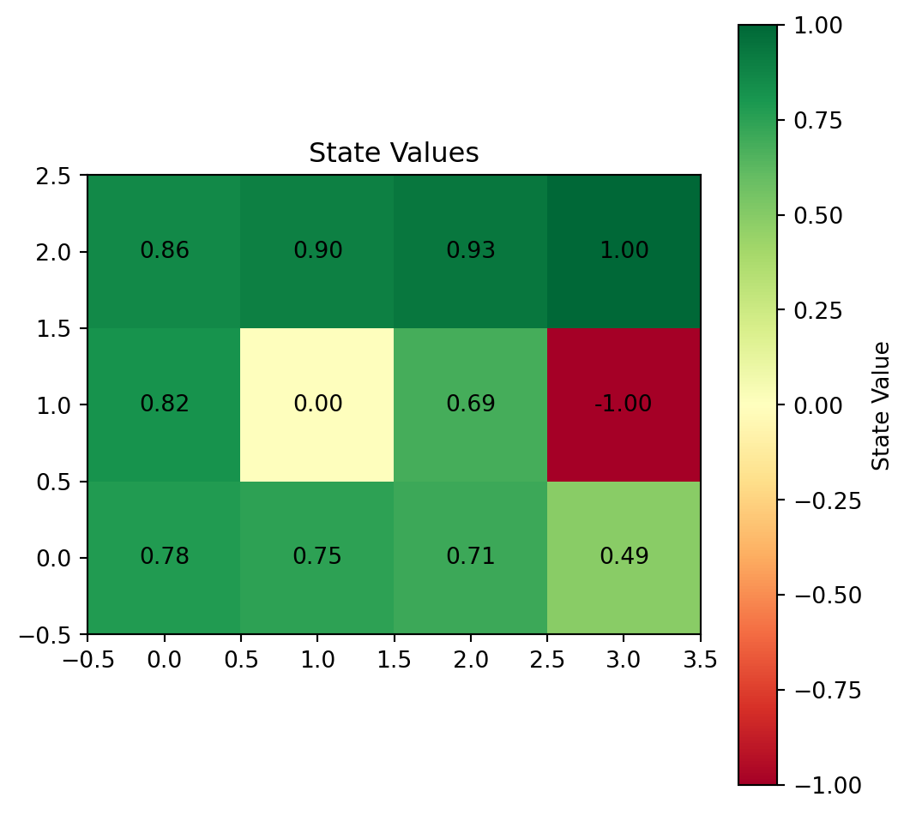

import numpy as np
import matplotlib.pyplot as plt
import matplotlib.patches as patches
# Define the grid world parameters
rows, cols = 3, 4 # Grid is 3x4
blocked_state = (2, 2) # (2,2) is blocked
sink_states = {(3, 4): 1, (2, 4): -1} # sink states with immediate rewards 1 and -1
immediate_reward = -0.02 # reward for all other states
# Initialize the grid with immediate rewards
grid = np.full((rows, cols), immediate_reward)
grid[blocked_state[0]-1, blocked_state[1]-1] = np.nan # Blocked state has no reward
for state, reward in sink_states.items():
grid[state[0]-1, state[1]-1] = reward
# Function to visualize the grid
def visualize_grid(grid):
fig, ax = plt.subplots(figsize=(6,6))
ax.set_xlim(0, cols)
ax.set_ylim(0, rows)
# Create grid lines and blocked/sink state indicators
for row in range(rows):
for col in range(cols):
state = (rows - row, col + 1) # Convert to (r, c) format
if state == blocked_state:
ax.add_patch(patches.Rectangle((col, row), 1, 1, facecolor="gray"))
elif state in sink_states:
color = "green" if sink_states[state] == 1 else "red"
ax.add_patch(patches.Rectangle((col, row), 1, 1, facecolor=color))
ax.text(col + 0.5, row + 0.5, f"{sink_states[state]:.1f}",
color="white", fontsize=16, ha='center', va='center')
else:
ax.add_patch(patches.Rectangle((col, row), 1, 1, edgecolor="black", facecolor="white"))
ax.text(col + 0.5, row + 0.5, f"{grid[rows - row - 1, col]:.1f}",
fontsize=16, ha='center', va='center')
ax.set_xticks(np.arange(0, cols+1, 1))
ax.set_yticks(np.arange(0, rows+1, 1))
ax.grid(True)
plt.gca().invert_yaxis()
plt.title("Grid World MDP")
plt.show()
# Visualize the grid
visualize_grid(grid)Basic MDP - Notes from Stanford CS229 L16


Here is the visual representation of the grid for the robot’s movement in the MDP problem. The grid is a 3x4 structure where:
- The gray cell at position (2,2) represents a blocked state.
- The green cell at (3,4) represents a sink state with a reward of 1.
- The red cell at (2,4) represents a sink state with a reward of -1.
- All other cells have an immediate reward of -0.2.
This setup aligns with the description of the environment for the robot to navigate. Let me know if you need further elaboration or modifications to the model.
An example policy, where each state displays the direction the robot would take according to the policy:
- “R” indicates moving right.
- “L” indicates moving left.
- “U” indicates moving up.
- “D” indicates moving down.
The gray cell remains blocked, and the sink states retain their colors with no actions because they are terminal states.
# Define directions
actions_map = {'L': (-1, 0), 'R': (1, 0), 'U': (0, 1), 'D': (0, -1)}
# Create a function to visualize the grid with a policy
def visualize_policy(policy):
fig, ax = plt.subplots(figsize=(6,6))
ax.set_xlim(0, cols)
ax.set_ylim(0, rows)
for row in range(rows):
for col in range(cols):
state = (rows - row, col + 1) # Convert to (r, c) format
if state == blocked_state:
ax.add_patch(patches.Rectangle((col, row), 1, 1, facecolor="gray"))
elif state in sink_states:
color = "green" if sink_states[state] == 1 else "red"
ax.add_patch(patches.Rectangle((col, row), 1, 1, facecolor=color))
ax.text(col + 0.5, row + 0.5, f"{sink_states[state]:.1f}",
color="white", fontsize=16, ha='center', va='center')
else:
ax.add_patch(patches.Rectangle((col, row), 1, 1, edgecolor="black", facecolor="white"))
# Draw the policy action
action = policy.get(state, "")
ax.text(col + 0.5, row + 0.5, action, fontsize=16, ha='center', va='center')
ax.set_xticks(np.arange(0, cols+1, 1))
ax.set_yticks(np.arange(0, rows+1, 1))
ax.grid(True)
plt.gca().invert_yaxis()
plt.title("Grid World Policy Visualization")
plt.show()
# Example policy (this is arbitrary, adjust as needed)
example_policy = {
(3, 1): 'R', (3, 2): 'R', (3, 3): 'R',
(2, 1): 'D', (2, 3): 'R',
(1, 1): 'R', (1, 2): 'R', (1, 3): 'U', (1, 4): 'U'
}
# Visualize the example policy
visualize_policy(example_policy)# Reimport necessary libraries and redefine variables due to environment reset
import numpy as np
# Function to calculate the transition matrix for each action
def calculate_transition_matrix_for_actions(grid, actions_map):
rows, cols = grid.shape
n_states = rows * cols
def state_to_index(r, c):
"""Convert state (r, c) to an index for the matrix."""
return (r - 1) * cols + (c - 1)
def index_to_state(index):
"""Convert index to state (r, c)."""
return (index // cols + 1, index % cols + 1)
# Initialize a dictionary to hold transition matrices for each action
transition_matrices = {}
for action, (dc, dr) in actions_map.items():
transition_matrix = np.zeros((n_states, n_states))
for row in range(1, rows + 1):
for col in range(1, cols + 1):
current_state = (row, col)
current_index = state_to_index(row, col)
# Skip blocked or sink states
if np.isnan(grid[row - 1, col - 1]) or (row, col) in sink_states:
continue
# Main move in the action's intended direction (probability 0.8)
intended_move = (row + dr, col + dc)
if 1 <= intended_move[0] <= rows and 1 <= intended_move[1] <= cols and not np.isnan(grid[intended_move[0] - 1, intended_move[1] - 1]):
intended_index = state_to_index(intended_move[0], intended_move[1])
transition_matrix[current_index, intended_index] = 0.8
else:
# Stay in the same state if out of bounds or blocked
transition_matrix[current_index, current_index] = 0.8
# Perpendicular moves (probability 0.1 each)
if action in ['L', 'R']: # Moving horizontally, so perpendiculars are vertical
perpendicular_moves = [(row + 1, col), (row - 1, col)] # Up and down
elif action in ['U', 'D']: # Moving vertically, so perpendiculars are horizontal
perpendicular_moves = [(row, col - 1), (row, col + 1)] # Left and right
for move in perpendicular_moves:
if 1 <= move[0] <= rows and 1 <= move[1] <= cols and not np.isnan(grid[move[0] - 1, move[1] - 1]):
move_index = state_to_index(move[0], move[1])
transition_matrix[current_index, move_index] = 0.1
else:
# Stay in the same state if perpendicular move is out of bounds or blocked
transition_matrix[current_index, current_index] += 0.1
# Store the transition matrix for the current action
transition_matrices[action] = transition_matrix
return transition_matrices
# Define the grid world parameters
rows, cols = 3, 4 # Grid is 3x4
blocked_state = (2, 2) # (2,2) is blocked
sink_states = {(3, 4): 1, (2, 4): -1} # sink states with immediate rewards 1 and -1
immediate_reward = -0.02 # reward for all other states
# Initialize the grid with immediate rewards
grid = np.full((rows, cols), immediate_reward)
grid[blocked_state[0]-1, blocked_state[1]-1] = np.nan # Blocked state has no reward
for state, reward in sink_states.items():
grid[state[0]-1, state[1]-1] = reward
# Calculate the transition matrices for each action
transition_matrices = calculate_transition_matrix_for_actions(grid, actions_map)
# Add values inside the cells and set original grid coordinates as labels for rows and columns
def state_to_label(rows, cols):
"""Generate grid coordinate labels for states."""
return [(r, c) for r in range(1, rows + 1) for c in range(1, cols + 1)]
state_labels = state_to_label(rows, cols)
# Plot all the transition matrices for all actions in a 2x2 grid with values inside cells
fig, axes = plt.subplots(2, 2, figsize=(12, 12))
# Flatten the axes for easier iteration
axes = axes.flatten()
# Plot each transition matrix for each action
for i, (action, matrix) in enumerate(transition_matrices.items()):
ax = axes[i]
im = ax.imshow(matrix, cmap='viridis', interpolation='nearest')
# Add values inside the cells
for row in range(matrix.shape[0]):
for col in range(matrix.shape[1]):
value = matrix[row, col]
if value > 0:
ax.text(col, row, f'{value:.2f}', ha='center', va='center', color='white')
# Set original grid coordinates as labels
ax.set_xticks(np.arange(len(state_labels)))
ax.set_yticks(np.arange(len(state_labels)))
ax.set_xticklabels(state_labels, rotation=90)
ax.set_yticklabels(state_labels)
ax.set_title(f"Transition Matrix for Action '{action}'")
plt.colorbar(im, ax=ax)
plt.tight_layout()
plt.show()
A function that takes as input:
- A policy (which defines an action for each state).
- A reward grid (which gives the immediate reward for each state).
- The transition matrices (one for each action).
The function will construct the Bellman value equations for each state based on the given policy, rewards, and transition matrices, and return these equations in a format suitable for solving.
The Bellman equation for each state \(s\) can be written as:
\[ V(s) = R(s) + \gamma \sum_{s'} P(s, s') V(s') \]
Where: - \(V(s)\) is the value of state \(s\), - \(R(s)\) is the immediate reward for state \(s\), - \(\gamma\) is the discount factor, - \(P(s, s')\) is the transition probability from state \(s\) to state \(s'\).
Let me write the function for this:
def build_bellman_equations(policy, reward_grid, transition_matrices, sink_states, gamma=0.9):
"""
Constructs the Bellman value equations based on a policy, rewards, and transition matrices.
Args:
- policy: A dictionary mapping states (r, c) to actions ('L', 'R', 'U', 'D').
- reward_grid: A grid of immediate rewards for each state.
- transition_matrices: A dictionary of transition matrices for each action.
- sink_states: A dictionary of sink states with their immediate rewards.
- gamma: The discount factor (default is 0.9).
Returns:
- A list of strings representing the Bellman value equations for each state.
"""
rows, cols = reward_grid.shape
n_states = rows * cols
bellman_eqs = []
def state_to_index(r, c):
"""Convert state (r, c) to an index for the matrix."""
return (r - 1) * cols + (c - 1)
def index_to_state(index):
"""Convert index to state (r, c)."""
return (index // cols + 1, index % cols + 1)
# Iterate through each state in the grid
for r in range(1, rows + 1):
for c in range(1, cols + 1):
state = (r, c)
state_idx = state_to_index(r, c)
# Skip blocked states
if np.isnan(reward_grid[r - 1, c - 1]):
continue
reward = reward_grid[r - 1, c - 1]
# If the state is a sink state, V(s) = R(s)
if state in sink_states:
equation = f"V({r},{c}) = {reward:.2f}"
bellman_eqs.append(equation)
continue
# Get the action for this state based on the policy
action = policy.get(state, None)
if action is None:
continue
# Get the corresponding transition matrix for the chosen action
transition_matrix = transition_matrices[action]
# Build the Bellman equation for the current state
equation = f"V({r},{c}) = {reward:.2f} + {gamma:.2f} * ("
transitions = []
# Sum over all possible next states based on the transition probabilities
for s_prime_idx in range(n_states):
prob = transition_matrix[state_idx, s_prime_idx]
if prob > 0:
r_prime, c_prime = index_to_state(s_prime_idx)
transitions.append(f"{prob:.2f} * V({r_prime},{c_prime})")
# Combine the terms and complete the equation
equation += " + ".join(transitions) + ")"
bellman_eqs.append(equation)
return bellman_eqs
# Call the function with example inputs
bellman_equations = build_bellman_equations(example_policy, grid, transition_matrices, sink_states, gamma=0.9)
# Display the Bellman equations
for eq in bellman_equations:
print(eq)V(1,1) = -0.02 + 0.90 * (0.10 * V(1,1) + 0.80 * V(1,2) + 0.10 * V(2,1))
V(1,2) = -0.02 + 0.90 * (0.20 * V(1,2) + 0.80 * V(1,3))
V(1,3) = -0.02 + 0.90 * (0.10 * V(1,2) + 0.10 * V(1,4) + 0.80 * V(2,3))
V(1,4) = -0.02 + 0.90 * (0.10 * V(1,3) + 0.10 * V(1,4) + 0.80 * V(2,4))
V(2,1) = -0.02 + 0.90 * (0.80 * V(1,1) + 0.20 * V(2,1))
V(2,3) = -0.02 + 0.90 * (0.10 * V(1,3) + 0.80 * V(2,4) + 0.10 * V(3,3))
V(2,4) = -1.00
V(3,1) = -0.02 + 0.90 * (0.10 * V(2,1) + 0.10 * V(3,1) + 0.80 * V(3,2))
V(3,2) = -0.02 + 0.90 * (0.20 * V(3,2) + 0.80 * V(3,3))
V(3,3) = -0.02 + 0.90 * (0.10 * V(2,3) + 0.10 * V(3,3) + 0.80 * V(3,4))
V(3,4) = 1.00Explanation:
- The function
bellman_equationsgenerates a Bellman equation for each state by summing over the possible next states (from the transition matrix). reward_gridprovides the immediate reward for each state.- The discount factor \(\gamma\) determines the present value of future rewards.
- The output is a list of strings, each representing the Bellman equation for a given state.
To solve the system of Bellman equations, we can represent the equations as a matrix equation of the form:
\[ V = R + \gamma P V \]
Where: - \(V\) is the vector of state values we are solving for. - \(R\) is the vector of immediate rewards for each state. - \(P\) is the transition matrix. - \(\gamma\) is the discount factor.
Rearranging the equation:
\[ (I - \gamma P) V = R \]
This is a system of linear equations that can be solved using methods such as matrix inversion or numerical solvers in Python. Here’s how to do it using NumPy:
Steps:
- Convert the system of Bellman equations into the matrix form \((I - \gamma P) V = R\).
- Solve the system using NumPy’s linear solver.
Explanation:
Ris the vectorized form of the reward grid (converted from a 2D grid to a 1D vector).Iis the identity matrix.- We construct the matrix equation \((I - \gamma P) V = R\) and solve for \(V\) using
np.linalg.solve(), which efficiently solves the linear system. - The solution is reshaped back into the grid format for easier interpretation.
Output:
- The resulting values \(V(s)\) for each state are stored in
state_values_grid, which gives the expected return for starting in each state under the given policy.
This method solves the Bellman equations for all states simultaneously.
def solve_bellman_with_sinks(policy, reward_grid, transition_matrices, sink_states, gamma=0.9):
rows, cols = reward_grid.shape
n_states = rows * cols
def state_to_index(r, c):
return (r - 1) * cols + (c - 1)
# Initialize reward vector R and identity matrix I
R = np.zeros(n_states)
I = np.eye(n_states)
P = np.zeros((n_states, n_states))
# Build the combined transition matrix P and reward vector R
for r in range(1, rows + 1):
for c in range(1, cols + 1):
state = (r, c)
idx = state_to_index(r, c)
# Skip blocked states
if np.isnan(reward_grid[r - 1, c - 1]):
continue
# Set reward
R[idx] = reward_grid[r - 1, c - 1]
# Handle sink states
if state in sink_states:
P[idx, idx] = 1.0 # Sink states transition to themselves
continue
# Get the action from the policy
action = policy.get(state, None)
if action is None:
continue
# Get the transition probabilities for this action
P[idx, :] = transition_matrices[action][idx, :]
# Adjust the transition matrix for sink states
for state in sink_states:
idx = state_to_index(*state)
P[idx, :] = 0
# Solve (I - gamma * P) * V = R
A = I - gamma * P
V = np.linalg.solve(A, R)
return V
# Function to visualize the state values
def visualize_state_values(state_values, rows, cols):
state_values_grid = state_values.reshape((rows, cols))
plt.figure(figsize=(6,6))
plt.imshow(state_values_grid, cmap='RdYlGn', interpolation='nearest')
for i in range(rows):
for j in range(cols):
if not np.isnan(state_values_grid[i, j]):
plt.text(j, i, f'{state_values_grid[i, j]:.2f}', ha='center', va='center', color='black')
plt.colorbar(label="State Value")
plt.title('State Values')
plt.gca().invert_yaxis()
plt.show()
# Solve for state values
state_values = solve_bellman_with_sinks(example_policy, grid, transition_matrices, sink_states, gamma=0.99)
# Visualize the state values
visualize_state_values(state_values, rows, cols)Value Iteration
Value iteration is an iterative algorithm that computes the optimal state value function by iteratively applying the Bellman optimality equation. The algorithm converges to the optimal state values under a given policy.
Here’s a step-by-step guide to implementing the value iteration algorithm:
Steps:
- Initialize the state values arbitrarily.
- Update the state values iteratively using the Bellman optimality equation.
- Repeat the updates until convergence (state values no longer change significantly).
- Extract the optimal policy from the converged state values.
Explanation:
- The
value_iterationfunction initializes the state values arbitrarily and iteratively updates them using the Bellman optimality equation. - The algorithm continues updating the state values until the maximum change in values falls below a specified threshold.
- The optimal policy is extracted from the converged state values by selecting the action that maximizes the expected return for each state.
- The function returns the optimal policy and the converged state values.
Output:
- The optimal policy is a dictionary mapping states to actions that maximize the expected return.
- The state values represent the expected return for each state under the optimal policy.
def value_iteration(reward_grid, transition_matrices, sink_states, gamma=0.9, tol=1e-6):
rows, cols = reward_grid.shape
n_states = rows * cols
def state_to_index(r, c):
return (r - 1) * cols + (c - 1)
# Initialize state values arbitrarily
V = np.zeros(n_states)
# Initialize the optimal policy
policy = {}
# Iterate until convergence
while True:
delta = 0
# Update state values using the Bellman optimality equation
for r in range(1, rows + 1):
for c in range(1, cols + 1):
state = (r, c)
idx = state_to_index(r, c)
# Skip blocked states
if np.isnan(reward_grid[r - 1, c - 1]):
continue
# Handle sink states
if state in sink_states:
V[idx] = sink_states[state]
continue
# Compute the value for the current state
max_value = float('-inf')
best_action = None
for action, transition_matrix in transition_matrices.items():
value = reward_grid[r - 1, c - 1] + gamma * np.sum(transition_matrix[idx, :] * V)
if value > max_value:
max_value = value
best_action = action
delta = max(delta, np.abs(V[idx] - max_value))
V[idx] = max_value
policy[state] = best_action
# Check for convergence
if delta < tol:
break
return policy, V
# Solve for the optimal policy and state values using value iteration
optimal_policy, optimal_state_values = value_iteration(grid, transition_matrices, sink_states, gamma=0.99)
# Visualize the optimal policy
visualize_policy(optimal_policy)
# Visualize the optimal state values
visualize_state_values(optimal_state_values, rows, cols)